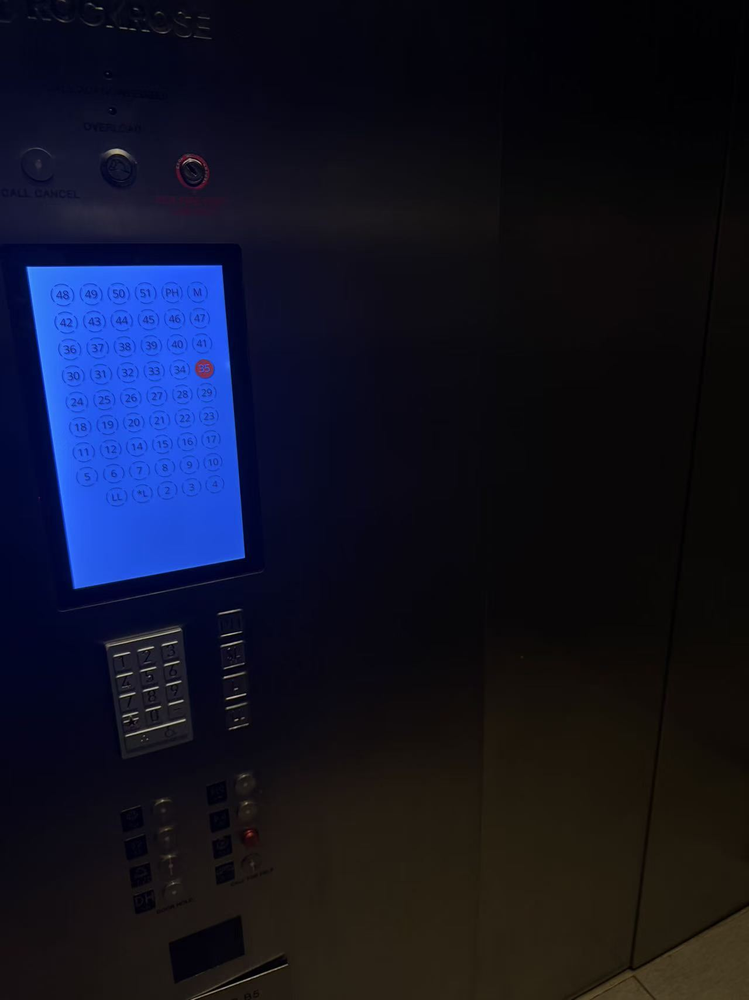

01. Going Down
I started by taking the elevator downstairs. The blue floor-selection screen stands out against the dark metal walls. Rows of small numbers fill the screen.

A blue rectangle in a dark space.
Walk Journal / Stop 1 of 7
From my apartment to Laoma Spicy, then to class in New York City. I took a car to eat and walked to school afterward.
I started by taking the elevator downstairs. The blue floor-selection screen stands out against the dark metal walls. Rows of small numbers fill the screen.

A blue rectangle in a dark space.